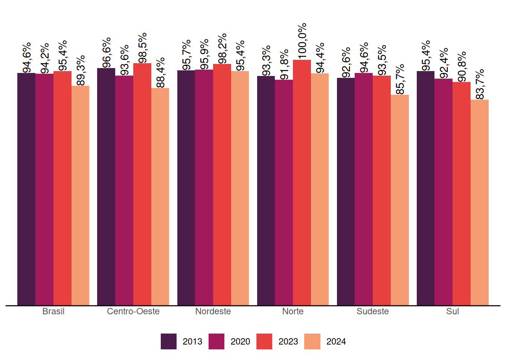
6 Participação e Controle Social no SUAS
A participação social é uma das diretrizes estabelecidas pela Constituição Federal de 1988 para a organização das ações da Assistência Social. Nesse sentido, a Lei Orgânica da Assistência Social (LOAS), que dispõe sobre a sua organização, instituiu em seu artigo 16 os Conselhos de Assistência Social em âmbito nacional, estadual e municipal como instâncias de deliberação colegiada do SUAS, cuja composição deve ser paritária entre governo e sociedade civil.
Os Conselhos integram o Sistema Único de Assistência Social (SUAS), juntamente com o governo e as entidades e organizações de assistência social. A Resolução do Conselho Nacional de Assistência Social (CNAS) nº 100/2023 estabelece a definição dos Conselhos de Assistência Social, suas competências, criação, estrutura e organização. Esta resolução também trata do desempenho das conselheiras e conselheiros, bem como sua função de interesse público.
Outra resolução importante para organização do controle social no SUAS é a Resolução CNAS/MDS nº 99/2023, que caracteriza os usuários, seus direitos e participação na Política de Assistência Social.
Este capítulo apresenta os resultados apurados pelo Censo SUAS para os Conselhos Municipais e Estaduais de Assistência Social, considerando as dimensões de estrutura administrativa, dinâmica de funcionamento e composição.
Em 2024, assim como em anos anteriores, todos os Conselhos Estaduais de Assistência Social (dos 26 Estados) responderam ao formulário do Censo SUAS.
Conforme apresentado no Gráfico 6.1, o percentual de municípios que responderam ao Censo SUAS com informações sobre os Conselhos Municipais de Assistência Social (CMAS) apresentou redução em 2024. O percentual de municípios que declararam possuir Conselho Municipal passou de 95%, em 2023, para 89% em 2024, sendo observada queda e, todas as regiões do país. Esse resultado merece atenção, uma vez que os Conselhos constituem instâncias fundamentais de participação e controle social no âmbito do SUAS.
6.1 Estrutura administrativa e dinâmica de funcionamento
Em relação aos Conselhos Estaduais, atualmente 96% informam possuir sede específica para funcionamento do controle social no SUAS, conforme pode ser observado no Gráfico 6.2, apresentando leve redução com relação a 2023. A existência de sede para o funcionamento dos Conselhos é essencial, pois além de garantir identidade na perspectiva de espaço ao qual a população pode acessar, também assegura o trabalho da/o secretária/o executiva/o e demais profissionais com a disposição de locais para arquivos e documentos, para reuniões, entre outros.
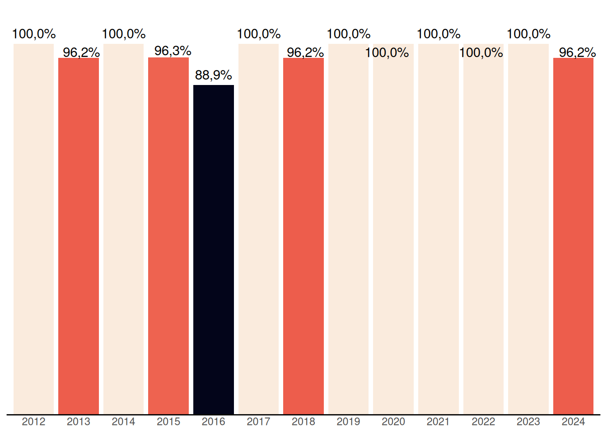
No que se refere aos Conselhos Municipais de Assistência Social, o Gráfico 6.3 mostra um crescimento ao longo dos anos no percentual de Conselhos Municipais que possuem sede para o funcionamento, com aumento de mais 1 ponto percentual em 2024, chegando a 61%.
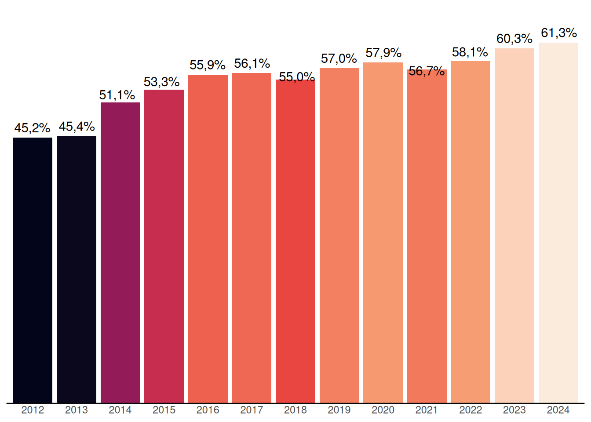
De acordo com a Resolução CNAS nº 100/2023, os Conselhos de Assistência Social devem contar com uma Secretaria Executiva, diretamente vinculada ao Conselho e subordinada à sua presidência e ao colegiado, com a finalidade de prestar suporte técnico e administrativo ao exercício de suas competências.
Conforme apresentado no Gráfico 6.4, o percentual de Conselhos Estaduais de Assistência Social que possuem secretárias(os) executivas(os) atuando exclusivamente no Conselho apresentou variações ao longo da série histórica. Em 2024, observa-se uma retomada do crescimento desse indicador, alcançando 92% dos Conselhos Estaduais, aproximando-se do parâmetro estabelecido pela Resolução e indicando um fortalecimento da estrutura de apoio ao funcionamento e ao exercício do controle social no âmbito dos Conselhos.
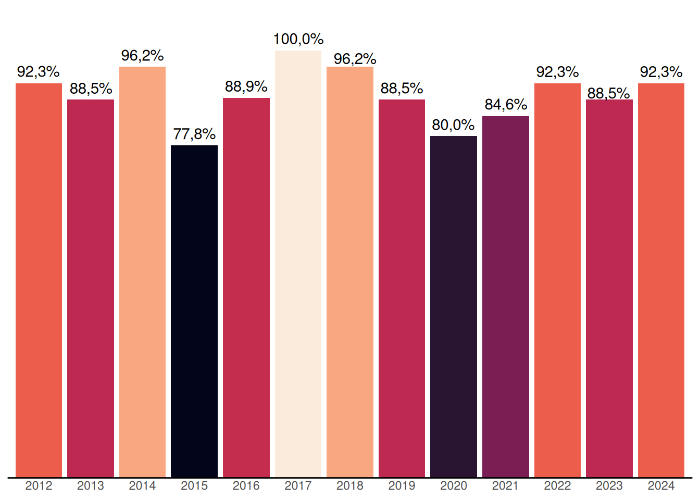
Nos Conselhos Municipais de Assistência Social, observa-se no Gráfico 6.5 uma trajetória de crescimento no percentual daqueles que possuem Secretaria Executiva, independentemente de a(o) secretária(o) atuar exclusivamente no Conselho. O indicador passou de 63%, em 2012, para 80%, em 2018, mantendo-se relativamente estável nesse patamar nos anos subsequentes, com pequenas variações. Em 2024, verifica-se um novo avanço, alcançando 83% dos Conselhos Municipais, o que sugere um movimento de fortalecimento da estrutura de apoio técnico e administrativo necessária ao funcionamento dos conselhos e ao exercício do Controle Social no âmbito do SUAS.
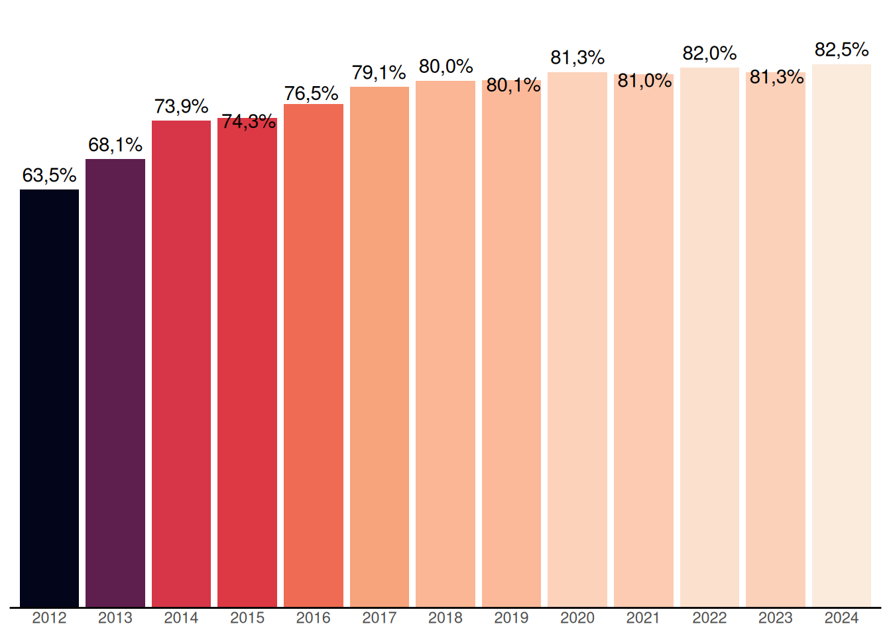
A normativa da assistência social estabelece que, nos Municípios de Pequeno Porte I e II, a(o) secretária(o) executiva(o) do Conselho de Assistência Social não precisa atuar de forma exclusiva. Esse aspecto se reflete nos dados apresentados no Gráfico 6.6, que evidenciam baixos percentuais de Conselhos com secretárias(os) executivas(os) dedicadas(os) exclusivamente às suas atividades: apenas 9,9% nos Municípios de Pequeno Porte I e 20% nos de Pequeno Porte II. À medida que aumenta o porte populacional dos municípios, observa-se também crescimento desse percentual, alcançando 28% nos Municípios de Médio Porte e 46% nos de Grande Porte. Ainda assim, mesmo nas Metrópoles, onde se pressupõe uma maior capacidade institucional, o indicador não atinge a totalidade dos Conselhos, chegando a 95%. Em âmbito nacional, apenas 16% dos Conselhos Municipais de Assistência Social informaram contar com secretárias(os) executivas(os) atuando exclusivamente no Conselho.
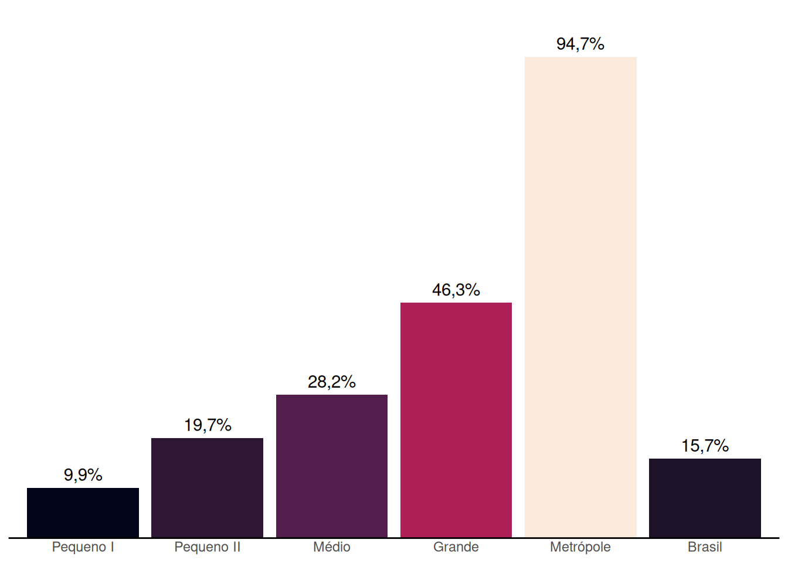
Em relação à dinâmica de funcionamento, a normativa estabelece que o plenário deve se reunir ordinariamente, no mínimo, uma vez por mês e, extraordinariamente, sempre que necessário. Conforme apresentado no Gráfico 6.7, observa-se que 38% dos Conselhos realizaram entre 12 a 14 reuniões em 2024, percentual idêntico ao daqueles que realizaram 15 ou mais reuniões. Considerando conjuntamente essas duas categorias, verifica-se que 76% dos Conselhos Estaduais realizaram pelo menos uma reunião mensal, atendendo ou superando a periodicidade mínima prevista normativamente. Por outro lado, 19% dos Conselhos informaram ter realizado entre 9 a 11 reuniões no ano e 3,8% entre 6 a 8 reuniões, indicando que uma parcela dos Conselhos não alcançou a frequência mínima de reuniões estabelecida, o que pode representar limitações para o exercício regular das funções de deliberação, acompanhamento e controle social da Política de Assistência Social.
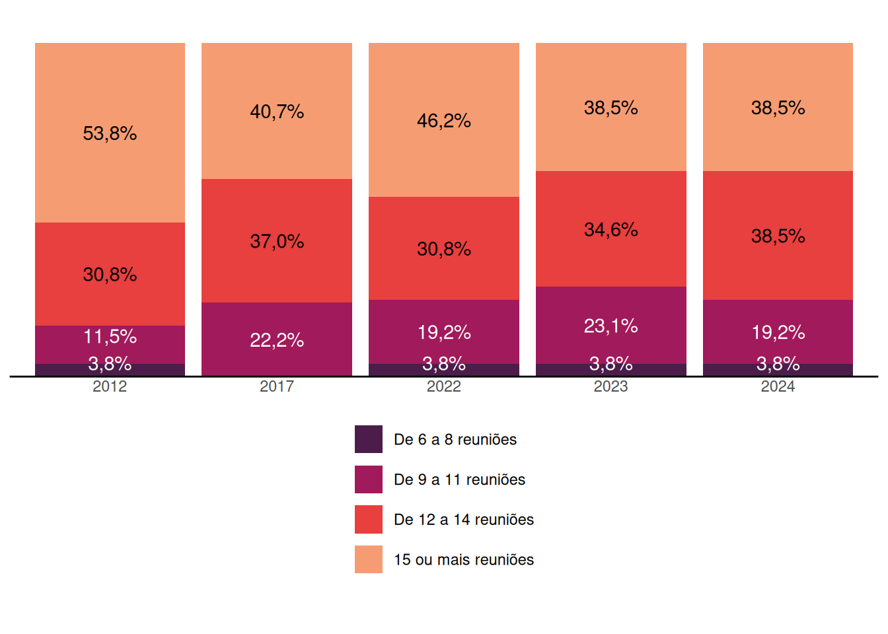
Nos Conselhos Municipais, a periodicidade das reuniões deve estar prevista em seu regimento interno, observando-se a realização de, no mínimo, uma reunião ordinária mensal, conforme estabelece a Resolução CNAS nº 100/2023.
Os dados apresentados na Gráfico 6.8 evidenciam uma distribuição heterogênea quanto à frequência das reuniões realizadas pelos Conselhos Municipais em 2024. Observa-se que 14% dos Conselhos realizaram entre 0 e 5 reuniões ao longo do ano, enquanto 27% promoveram de 6 a 8 reuniões e 23% realizaram entre 9 e 11 encontros. Por sua vez, 24% dos Conselhos informaram ter realizado de 12 a 14 reuniões e 12% registraram 15 ou mais reuniões no período.
Considerando que a realização de, pelo menos, 12 reuniões anuais correspondem ao cumprimento da periodicidade mínima prevista normativamente, os dados indicam que apenas 36% dos Conselhos Municipais atingiram ou superaram esse parâmetro, ao passo que a maioria realizou um número de reuniões inferior ao recomendado, aspecto que pode repercutir na regularidade das atividades deliberativas e no exercício do controle social da Política de Assistência Social.
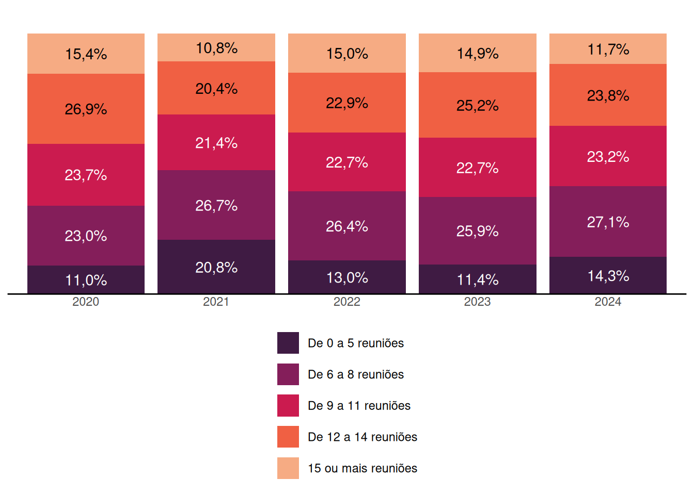
6.3 Deliberação sobre planejamento, orçamento e benefícios eventuais
A elaboração do Plano de Assistência Social está prevista na Lei Orgânica da Assistência Social (LOAS) e na Norma Operacional Básica do SUAS (NOB-SUAS/2012). Trata-se de um instrumento de planejamento de responsabilidade do órgão gestor da política de assistência social, que deve ser submetido à apreciação e aprovação do respectivo Conselho de Assistência Social, reafirmando o papel do controle social na definição das diretrizes, prioridades e metas da política.
Conforme apresentado na Gráfico 6.13, o percentual de Conselhos Estaduais que informaram ter discutido o Plano de Assistência Social referente ao ano anterior atingiu 85% em 2021. Nos anos seguintes, observou-se uma redução desse indicador, que passou para 65% em 2022 e para 62% em 2023. Em 2024, entretanto, verificou-se uma recuperação expressiva, alcançando 92%, o maior percentual registrado na série histórica.
Embora a LOAS estabeleça que o Plano de Assistência Social tenha vigência quadrienal, a NOB-SUAS/2012 recomenda que suas atualizações anuais sejam submetidas ao respectivo Conselho de Assistência Social. Nesse sentido, o aumento observado em 2024 pode indicar um fortalecimento dos processos de planejamento e da participação dos Conselhos Estaduais no acompanhamento e na deliberação sobre os instrumentos de gestão da política de assistência social.
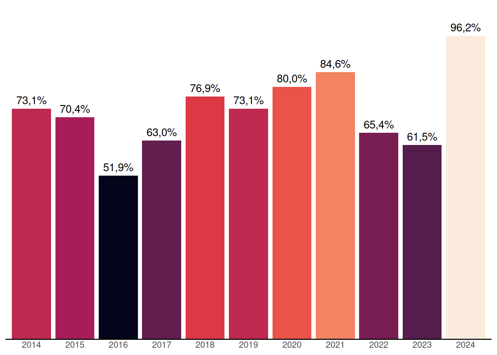
Em relação aos Conselhos Municipais de Assistência Social, observa-se na Gráfico 6.14 uma variação ao longo da série histórica no percentual daqueles que informaram ter discutido o Plano de Assistência Social referente ao ano anterior. Destaca-se a redução expressiva registrada no Censo SUAS de 2023, quando o indicador passou de 82%, em 2022, para 67%. Em 2024, contudo, verifica-se uma recuperação desse percentual, que alcançou 75%, embora ainda permaneça abaixo do patamar observado em 2022.
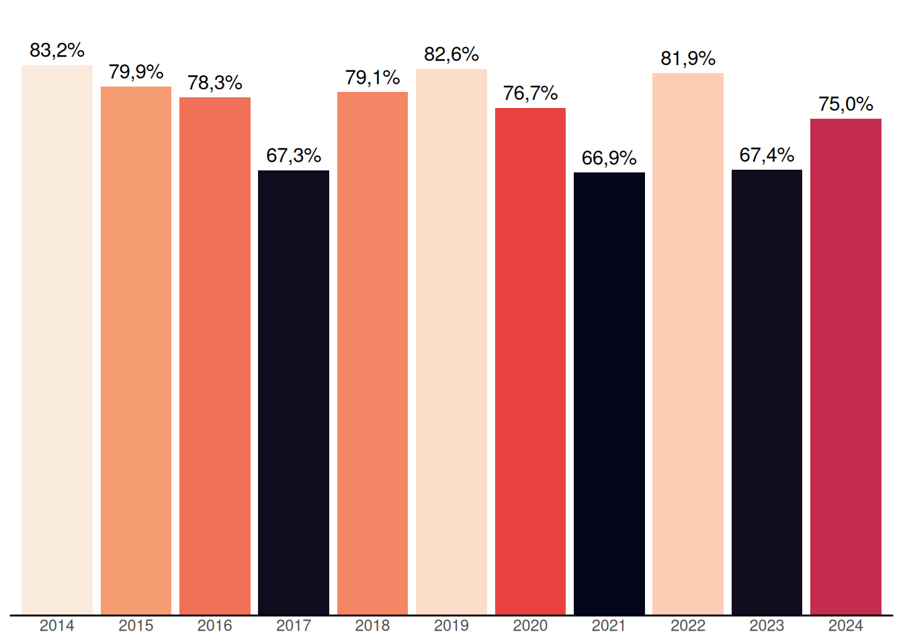
O controle social tem como uma de suas atribuições o exercício democrático de acompanhar a gestão e avaliar a Política de Assistência Social. Nesse contexto, cabe aos Conselhos deliberarem sobre instrumentos de planejamento e financiamento, como a proposta orçamentária do Poder Executivo e o Plano Plurianual (PPA) da Assistência Social. Entretanto, o Gráfico 6.15 evidencia que, em 2024, houve uma redução no percentual de Conselhos Estaduais que deliberaram sobre a proposta orçamentária, alcançando 65%.
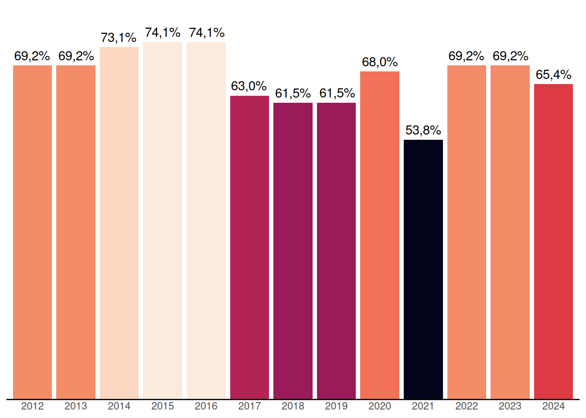
Em 2024 o percentual de Conselhos Municipais que deliberaram sobre a proposta anual de orçamento do Executivo aumentou em 1 ponto percentual, chegando em 79%, o percentual máximo da série histórica desde 2012 (Gráfico 6.16).
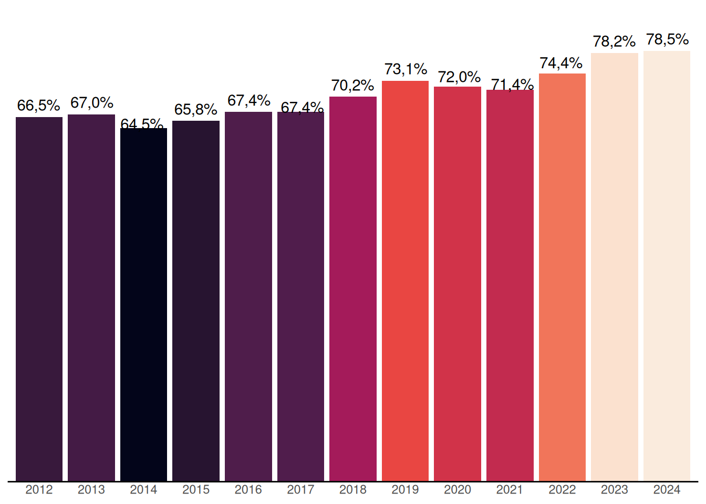